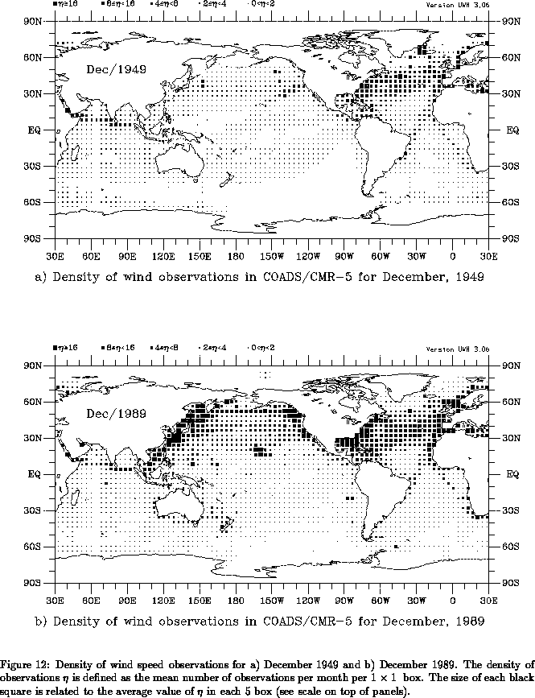

In addition to instrument errors and uncertainty in the physical
parameterizations, surface marine data sets are affected by the
inhomogeneous, and in some areas inadequate, spatial and temporal
data coverage over the oceans. As an example, Fig. 12
presents the density of wind observations for December 1949 and
December 1989. The density of observations
is defined as the mean
number of observations per month per 1°
1° box. Ship
observations are concentrated along well traveled ship lanes, with the
maximum coverage at the coastal areas of the northern oceans. In
winter, very few observations are available over the ice-covered
Arctic oceans. The data coverage for December/49 is characteristic of
the early decades in which large areas of the tropics and southern
oceans are completely void of data; even most of the North Pacific
boxes have fewer than 2 observations per month.
Although surface marine data coverage has improved in the last decades
(Fig. 12b), coverage in parts of the tropics and southern
oceans is still sparse.
In addition to the limited extent of ship traffic, modern day merchant ships adapt their route depending on currents, wave, and weather conditions. Favorable waves and winds can add several knots to the speed of a large ship, conserving fuel and cutting transport time by hours or days (Chesneau 1994). If ships of the Volunteer Observing Fleet regularly avoid stormy weather, the so-called fair weather bias (FWB) probably exists in COADS. The purpose of this section is to document the effect of sampling errors and fair weather bias in our analyzed data products.

There have been a number of studies addressing the question of how many observations are necessary to define reliable monthly statistics. In a study comparing monthly means between Ocean Weather Station (OWS) data and merchant ship data in the North Atlantic and Pacific, Ramage (1986) computed correlations between OWS mean values and those found from ship data taken in 2° boxes surrounding the Ocean Weather Station. Correlations were fairly high (83-97%) for both SST and air temperature when fewer than 10 ship observations per month were considered. Merchant ship wind speed, however, did not show high correlations with OWS wind speed until more than 20 ship observations per month were used. Luther and Harrison (1984), analyzing tropical Pacific island data, suggest that at least 32 observations are necessary to accurately represent month-to-month fluctuations in zonal pseudo wind stress. Fissel et al. (1977), analyzing OWS P surface reports, suggest that at least 15 observations per month are necessary to obtain reliable estimates of monthly mean wind stress. While these results are relevant for determining sample criteria for the local marine climate, they cannot be directly applied to assess the reliability of objectively analyzed surface marine data sets, as we explain next.
The analyzed fields in UWM/COADS are produced in two steps. First, 1-degree box means are formed. These box means are then objectively analyzed. This objective analysis is produced by successively including data in the neighborhood of a grid point. In addition to the obvious effect of smoothing, this averaging of nearby data serves to overcome some of the sampling problems, averaging out random errors present in the means of each individual 1-degree box. The monthly averaging of data on 1-degree boxes is used primarily as a data reduction step prior to the objective analysis. In this sense, each 1-degree box mean acts as a super-observation, a concept frequently used in operational atmospheric data assimilation (e.g., Lorenc 1986). Therefore, the statistical properties of the analyzed data on a 1-degree grid depends not only on the errors of the 1-degree boxes, but equally on the radius of influence and weights used to produce the analysis.
Our goal is to assess the magnitude of sampling errors on our objectively analyzed data products. By ``sampling errors'' we mean the uncertainty in our monthly mean climatology and anomalies that are caused by the sparse data coverage characteristic of COADS. Our approach consists of using analyzed ECMWF twice daily data as a surrogate for the marine atmosphere. We simulate COADS data coverage by deleting observations in the ECMWF data set which have no counterpart in COADS. By comparing the objectively analyzed monthly means based on this reduced, COADS-like data set with the monthly means based on the full ECMWF data set, we assess the effects of sampling on different parts of the world oceans. Please take note that we do not compare our COADS based analysis to ECMWF's analysis. Discrepancies found in such a comparison would be due to factors such as different raw data, quality control and method of analysis. Isolating the effects of sampling would not be possible. A comparison of our surface marine data set with those derived by other authors will be presented elsewhere.
We begin by describing our data source and method of analysis in section 10.1, followed by a discussion of sampling errors and fair weather bias in the 1980's. Sampling errors in previous decades are examined in section 10.3. Results are summarized in section 10.4.